05 / Case study
ARIA Athletic Apparel
Building an outdoor apparel brand from the people up: research and a persona first, then a logo system, a brand guidelines book, a social and email campaign, and a website and app to bring it all together.

Starting with the market
Before drawing anything we looked at where ARIA would sit. A multi-platform competitor analysis compared how brands like Salomon show up on social media and on the web, and a Forrester model mapped out the kind of audience ARIA should talk to.
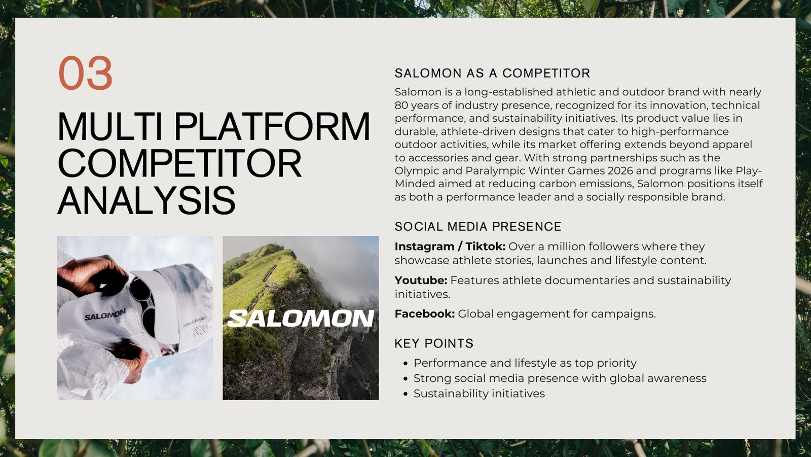
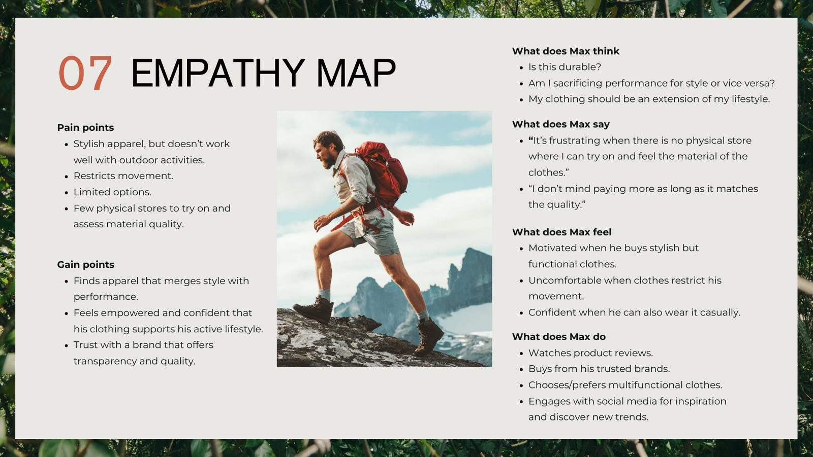
Meet Max
The research turned into Max, a 25-year-old hiker. Interview questions and an empathy map helped us understand what he thinks, feels and needs from his gear, and every decision after this point was checked against him.
As a team we interviewed, mapped and argued our way to who he is, which made the design decisions later on much faster.
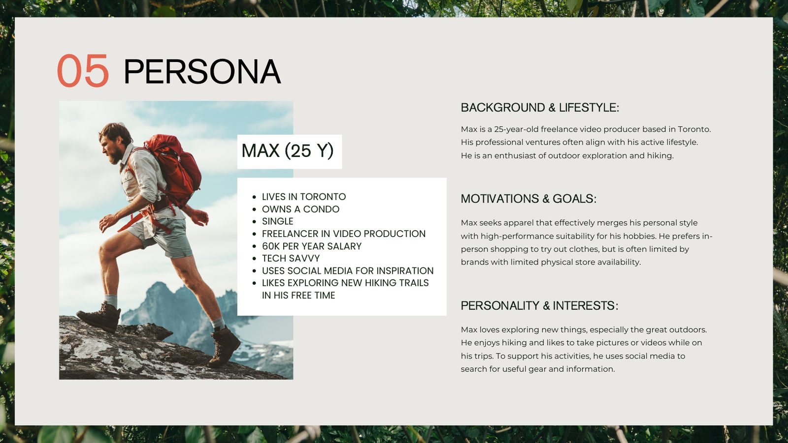
A mark that climbs
The logo is a stylised peak that doubles as the A in ARIA. We built a colour system around sunrise and sunset tones over the mountains and documented the whole identity in a brand guidelines book so it stays consistent everywhere it shows up.
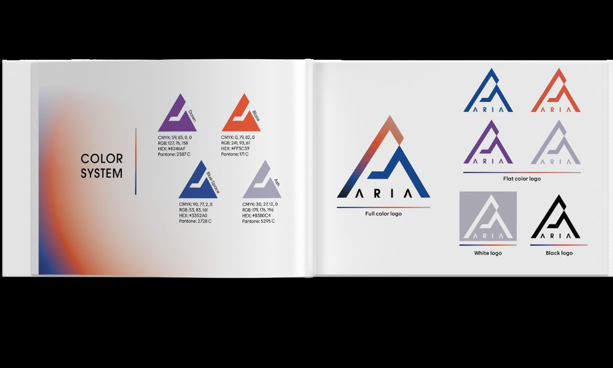
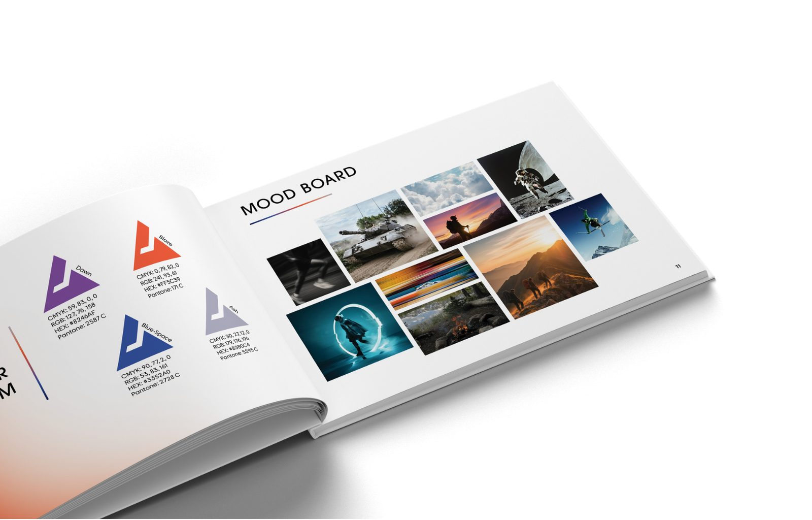
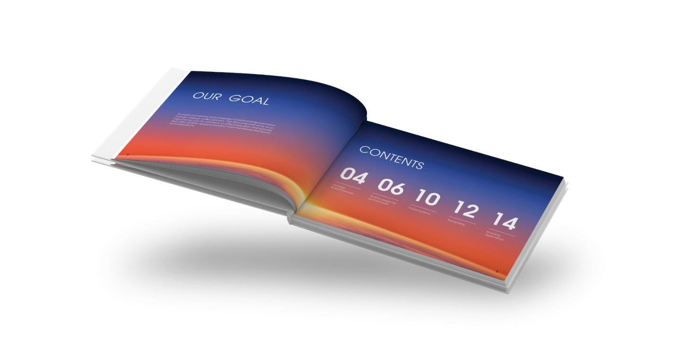
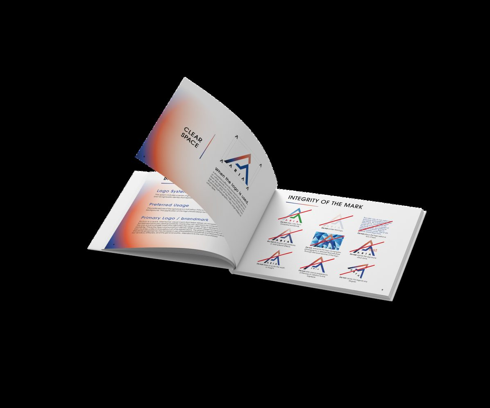
Getting the word out
The campaign lived on social media first, with video reels and posts built around getting people outdoors, then carried into an email campaign with the line Hike it up with ARIA and an extra marketing opportunity aimed at weekend hikers.
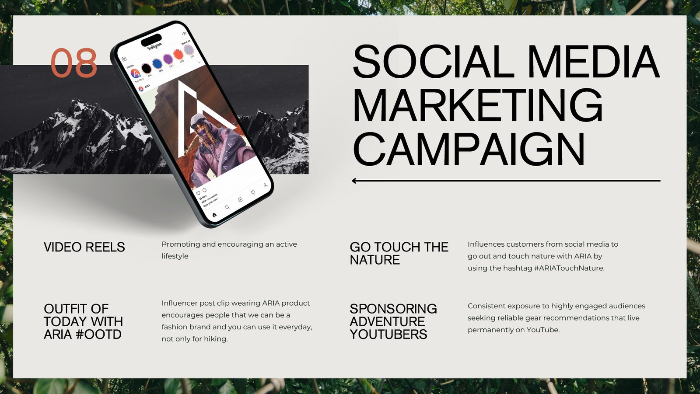
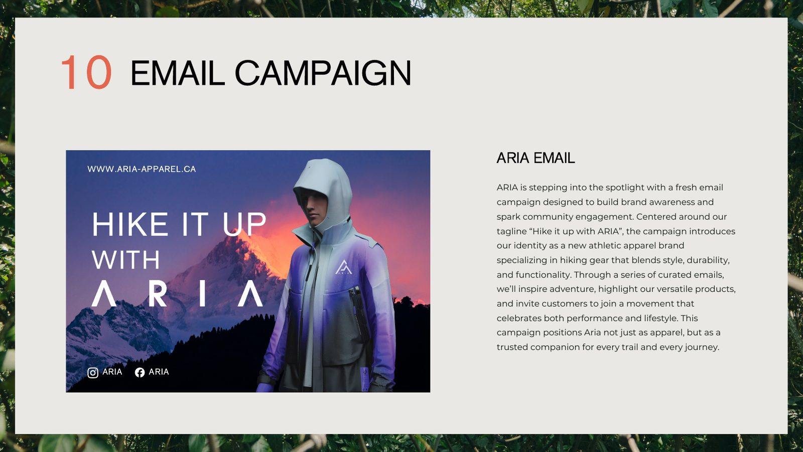
Website and app
Everything comes together in a responsive website and a mobile app so the brand feels the same on a laptop at home or on a phone at the trailhead.

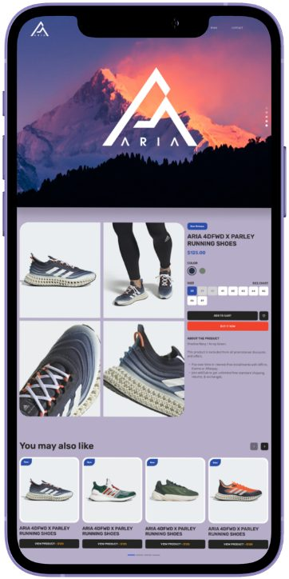
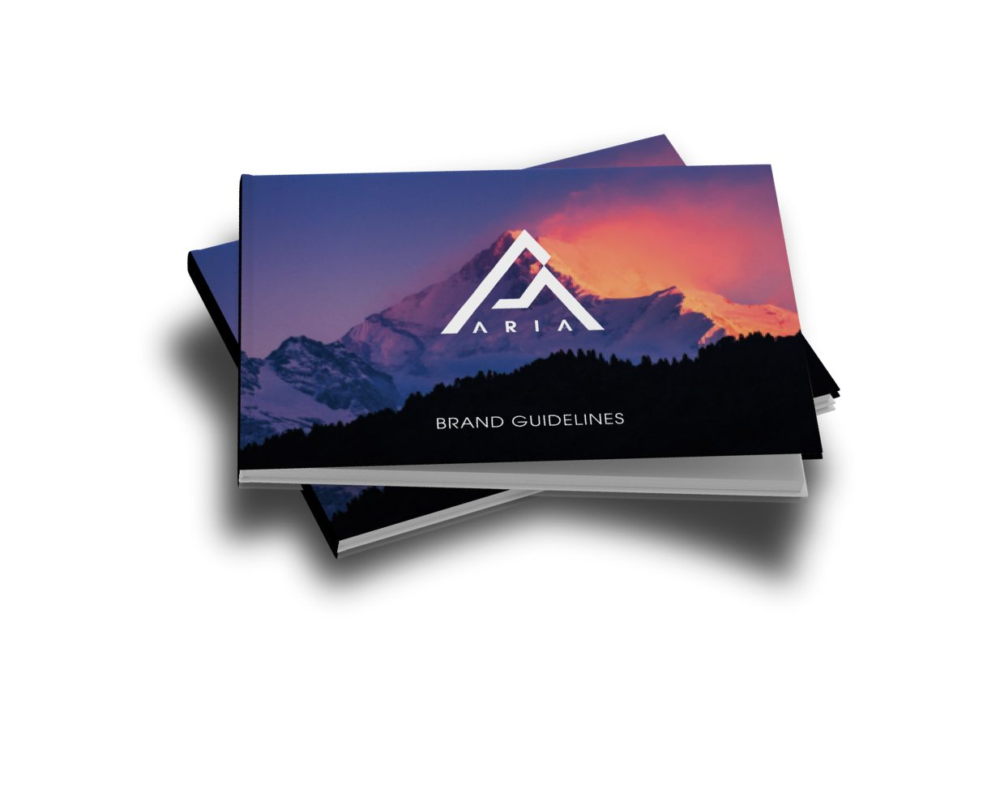
Team
- Parinya Damsuwan Team member
- Omar El Sadek Team member
- Brandon Truong Team member
- Jalu Ramirez Team member
Next project →